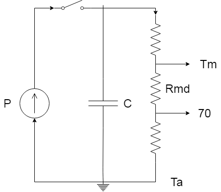

Si tratta di scaldare quattro resistenze tenendole a 70 gradi
Si poteva fare tranquillamente in hw
La temperatura misurata Tm differisce dalla temperatura desiderata di 70 gradi
di un valore che dipende dalla potenza e dalla resistenza termica fra le due superfici
La capacità modella il fatto che le resistenze raggiungono una temperatura maggiore di quella desiderata per cui, quando si stacca l'alimentazione, continuano a scaldare il sistema

0x02
0x03
La dimensione massima del pacchetto codificato è di 1 KiB, per cui
quello non codificato è di 768 byte
Il pacchetto è composto da due byte di comando seguiti da zero o più dati e da un checksum di un byte
I due bit più significativi del comando hanno il significato che segue:
00 | Richiesta |
01 | Errore nell'esecuzione del comando |
10 | Errore: richiesta sconosciuta |
11 | Risposta |
Il checksum è il not della somma a 8 bit del comando e della parte dati,
per cui sommando tutto ciò che sta fra inizio e fine trama si ottiene 0xFF
Ad ogni pacchetto valido va sempre inviata una risposta, segnalando eventualmente il tipo di errore
La risposta è formata dal comando (modificato nei bit più significativi) seguito da zero o più dati
Il formato dei campi scalari è sempre little endian
| Codice | Funzione | Parametri | Risposta | Note |
|---|---|---|---|---|
| Varie | ||||
0x0000
| Eco | Bytes di cui fare l'eco | Uguale ai parametri | |